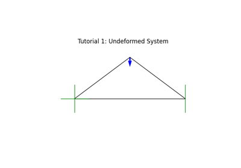
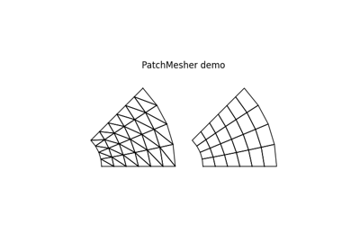
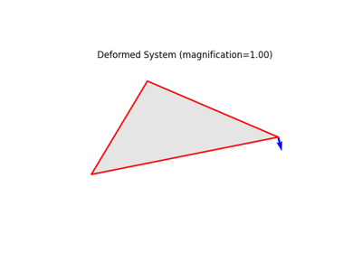

Tutorials Gallery
This page contains tutorials on various tasks, and an overview over available element types. Those tutorials provide a quick overview on features and modeling techniques. For more full examples, see the Examples Gallery.
Model Creation

Tutorial 1 - Creating a Model

Tutorial 2 - Using Meshers

Tutorial 3 - Loading a Model
Finite Elements based on the Direct Stiffness Method
Linear Finite Elements
Large Deformation Finite Elements
Plastic Analysis
This feature and related examples will be made available in version 1.2, estimated for mid 2025.